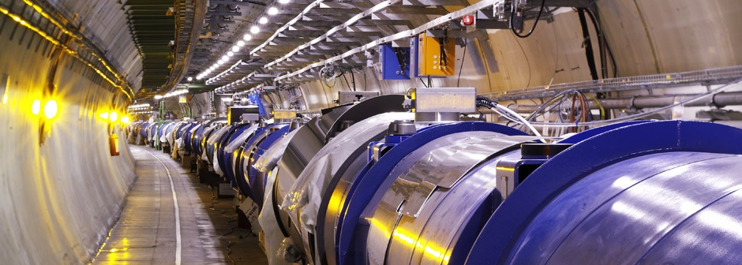

Proj 1
How a Detector Works
Accelerators at CERN boost particles to high energies before they are made to collide inside detectors. The detectors gather clues about the particles – including their speed, mass and charge – from which physicists can work out a particle's identity. The process requires accelerators, powerful electromagnets, and layer upon layer of complex subdetectors.
Particles produced in collisions normally travel in straight lines, but in the presence of a magnetic field their paths become curved. Electromagnets around particle detectors generate magnetic fields to exploit this effect. Physicists can calculate the momentum of a particle – a clue to its identity – from the curvature of its path: particles with high momentum travel in almost straight lines, whereas those with very low momentum move forward in tight spirals inside the detector. Modern particle detectors consist of layers of subdetectors, each designed to look for particular properties, or specific types of particle. Tracking devices reveal the path of a particle; calorimeters stop, absorb and measure a particle’s energy; and particle-identification detectors use a range of techniques to pin down a particle's identity. Tracking devices